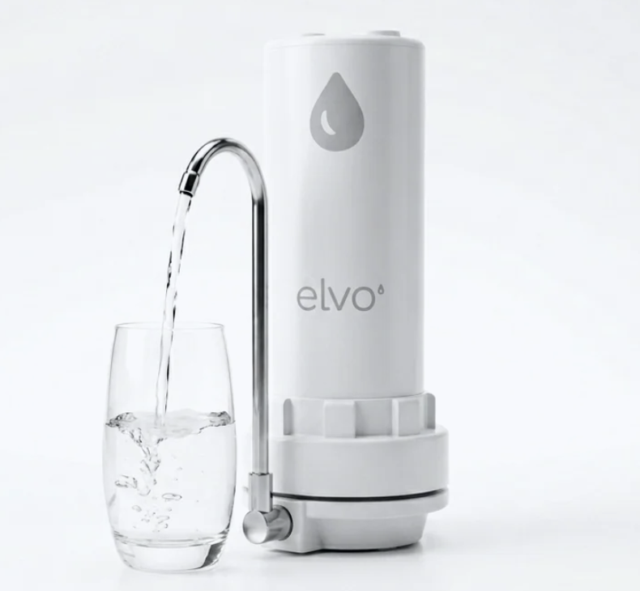

elvo
Manual de instalación
Tu agua,
desde el caño.
En 5 minutos.
Sin electricidad, sin obras y sin gasfitero. Este manual sirve para elvo· Nativo y elvo· Vivo: los dos se instalan igual.


Sin electricidad, sin obras y sin gasfitero. Este manual sirve para elvo· Nativo y elvo· Vivo: los dos se instalan igual.

Retira primero el aireador. Lo que encuentres define si usas el jebe o no.
Si el derivador se conecta directamente a la boca de tu grifo, retira el jebe del derivador y enrosca el derivador en su lugar.
Si tu grifo requiere el jebe, déjalo puesto en el derivador y ajústalo al diámetro de tu caño hasta que quede firme.
Si tu grifo tiene aireador, gíralo con la mano hasta sacarlo. Si no tiene, pasa al paso 2.
Si el derivador se conecta directo a la boca del grifo, quítale el jebe. Si tu grifo lo requiere, déjalo puesto.
Enrosca el derivador en la boca del grifo, o ajusta el jebe al diámetro de tu caño. Apriétalo con la mano.
La manguera ya viene conectada entre el derivador y el purificador. Déjalo sobre la mesada, junto al grifo.
La primera vez que gires la palanca requiere un poco de fuerza.
El núcleo dura 18 meses de uso normal. Te avisamos por WhatsApp cuando toque cambiarlo.
Desenrosca el purificador con la llave que viene en la caja.
Retira el film del núcleo de repuesto.
Sin importar el lado: funciona de ambos lados.
Vuelve a enroscar el purificador.
Antes de usar, deja correr el agua 10 minutos: es la purga y activación de los filtros.
WhatsApp
929 190 100
Te devolvemos tu dinero.
1 año. Además, 30 días de prueba.
Pensado para agua de red potable. Los resultados dependen de la calidad del agua de entrada y del cambio oportuno del núcleo.